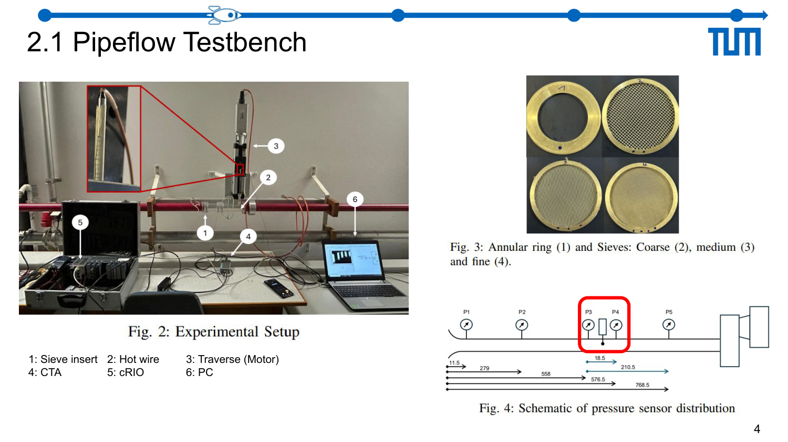
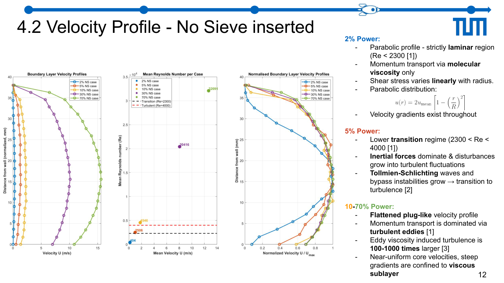
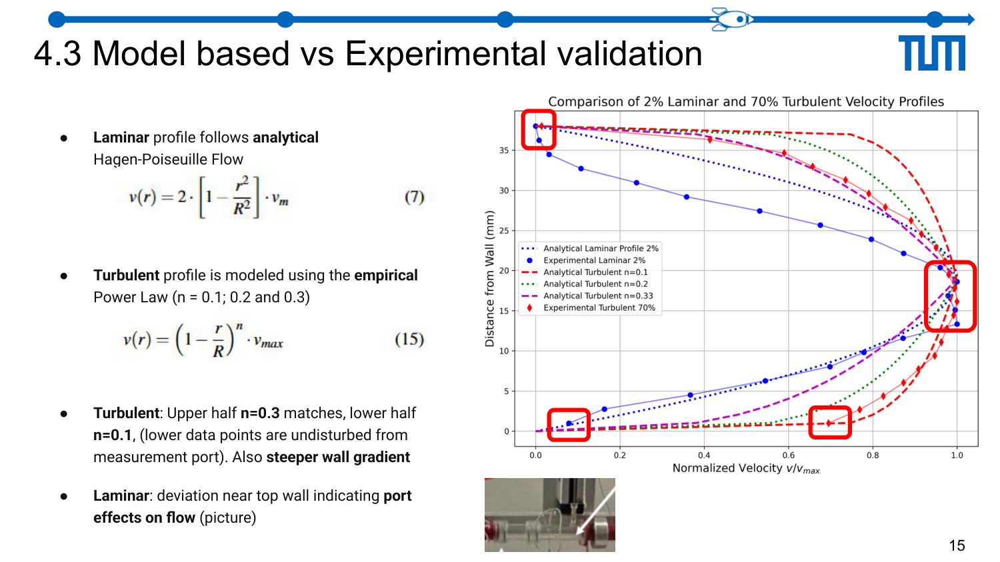
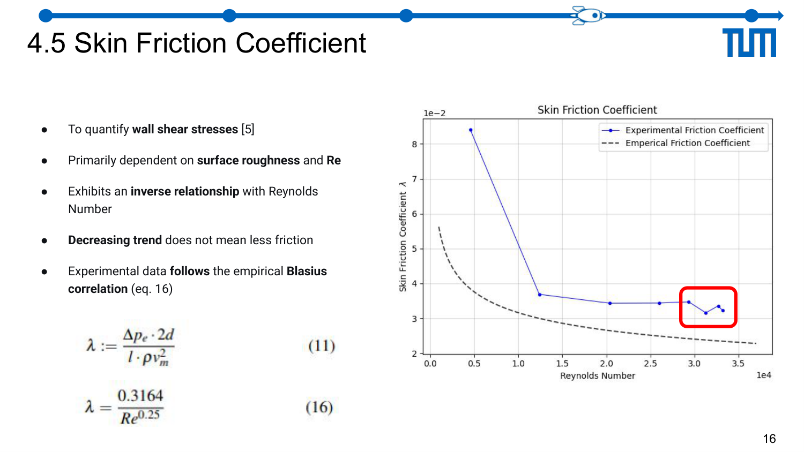

Case study · Experimental fluid dynamics · TUM
Pipe-flow boundary layers & mesh pressure-drop.
Hot-wire CTA profiling of entrance-length boundary-layer development in a pipe, and pressure-drop characterisation across wire meshes of varying density — measured, modelled, and cross-validated.
Problem
Two distinct but related questions driven from first principles. First, how does a pipe-flow boundary layer develop along the entrance region, and at what streamwise station does the velocity profile stop evolving — i.e., become fully developed? Second, how much pressure is lost across wire-mesh screens of different spacing densities, and how does that loss depend on approach velocity and mesh open-area ratio? Both are classical problems with well-known correlations, which made them ideal for learning how to design, run, and defend an experiment against theory rather than trusting either blindly.
Approach
- Pipe-flow rig — instrumented pipe with an inlet contraction and a traversable hot-wire probe; Reynolds numbers covering the laminar-to-turbulent transition range.
- CTA calibration — calibrated the hot-wire against a Pitot reference using a King's Law fit (E² = A + B·Un) before every measurement campaign, to keep drift out of the profile data.
- Radial traverses — took radial velocity profiles at multiple streamwise stations from x/D ≈ 5 to x/D ≈ 60, resolving the wall region with fine near-wall steps.
- Entrance-length diagnostics — tracked the centreline-velocity evolution and the profile shape (laminar → parabolic, turbulent → power-law) against x/D to pin the development length.
- Mesh pressure-drop sweep — characterised three mesh densities at a range of approach velocities, recording ΔP with a differential manometer and comparing against Idelchik/Wieghardt correlations for screen loss.




Tools & setup
- CTA hot-wire — single-wire probe on a motorised traverse, King's-Law calibrated per campaign.
- Differential manometer — static-pressure taps upstream and downstream of each mesh screen.
- Python — profile fitting (Power-Law turbulent + Blasius-flat-plate comparisons), friction-factor extraction from pressure-drop vs velocity slopes, uncertainty propagation from calibration residuals.
Results
- Entrance length — fully-developed turbulent flow reached within the range predicted by the classical Le/D ≈ 4.4·Re1/6 correlation. Laminar-regime points matched the Langhaar Le/D ≈ 0.06·Re estimate within experimental scatter.
- Fully-developed profile — the 1/n power-law fit to turbulent profiles gave n values increasing from ~6 at low Re to ~7–8 at higher Re, consistent with textbook behaviour.
- Friction factor — measured λ agreed with the Blasius correlation (λ = 0.316·Re−1/4) within a few percent in the turbulent range after subtracting mesh loss.
- Mesh loss — ΔP scaled quadratically with approach velocity for each mesh density, with loss coefficient K increasing monotonically as open-area ratio decreased — in line with Idelchik's screen-loss formulation.
The most instructive moment was the drift check: re-calibrating the hot-wire at mid-campaign showed a small but real upward drift in the King's-Law fit, which, if ignored, would have inflated measured velocities by a couple of percent. The calibration discipline was the lesson, not the velocity number.
Validation
The experiment was designed around validation: every measured quantity had a closed-form theoretical target — Langhaar/White for entrance length, Blasius / Colebrook for friction factor, Idelchik for screen loss — and the agreement (or disagreement) was the scientific product. Disagreements were traced, not absorbed: near-wall velocity underestimation at the smallest step came from probe-wall interference and was called out explicitly in the report.
Lessons learned
- Hot-wire work is a calibration exercise first and a measurement exercise second. The King's-Law drift check was not optional; it was the experiment.
- Entrance length is surprisingly long even at modest Re. Test-section instrumentation placed too close to the inlet gives profiles that look fully developed but aren't.
- Screen-loss correlations like Idelchik's are blunt instruments, but they're the right blunt instrument. Matching the measured K to within ~10% with a one-parameter correlation is a fair result.
Artifacts
- TUM practical course report — "Experimental Fluid Dynamics: pipe-flow development and mesh pressure drop".
- Python data-reduction notebook (calibration fits, profile plots, loss coefficient extraction).